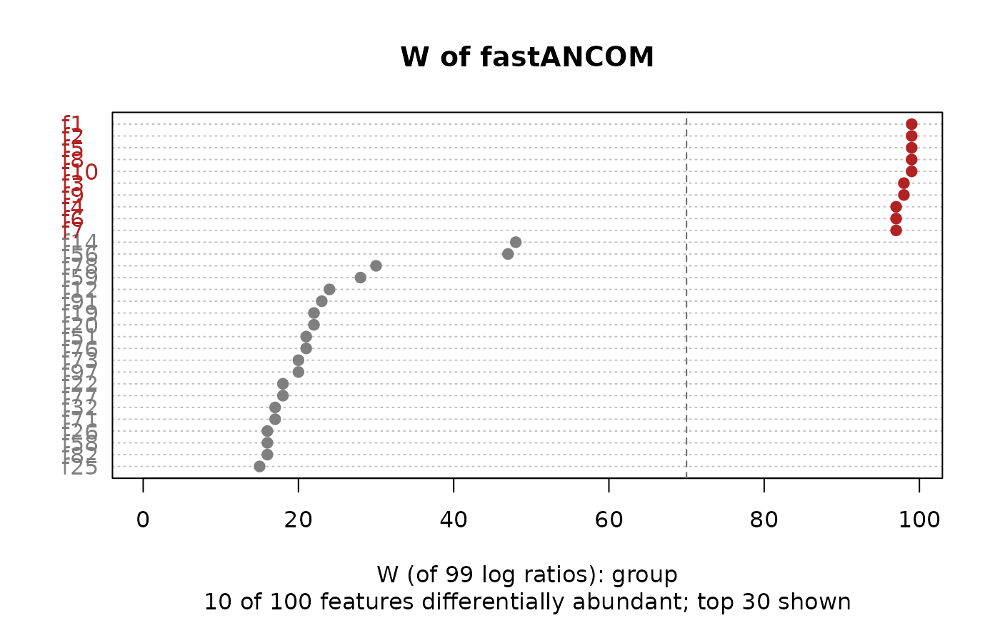
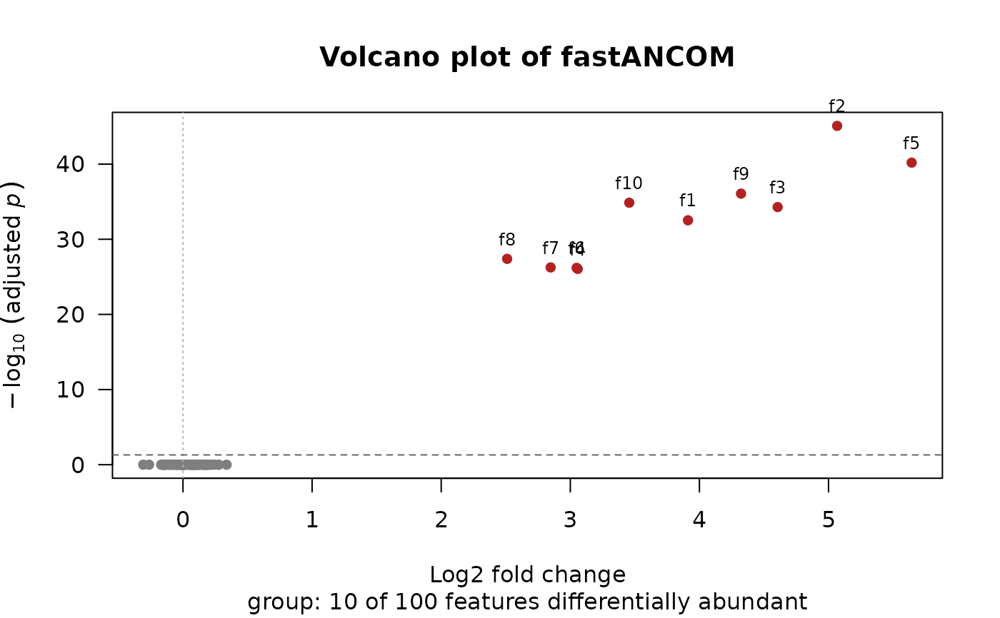

Tests each feature for differential abundance as ANCOM does, by testing its log ratio with every other feature, but from one linear model per feature instead of one per pair (Zhou et al. 2022). Each feature also gets a log2 fold change against a reference set of features that seem not to change, with a standard error and a p-value. Covariates are allowed.
Usage
fastancom(
counts,
formula = NULL,
data = NULL,
groups = NULL,
margin = 1L,
pseudocount = NULL,
alpha = 0.05,
detect_rate = 0.7,
ref_rate = 0.05,
p_adjust = "holm",
cpus = n_cpus()
)Arguments
- counts
A numeric matrix of non-negative abundances (samples \(\times\) features), or any of the objects listed under Input Types. Counts, proportions, and the output of
replace_zeros()are all accepted: each sample's scale cancels out of the log ratios.- formula
The model, a one-sided formula over the columns of
data, such as~ status + age, or the same as a string. Every factor (and character or logical column) is coded with treatment contrasts, its first level (in sorted order, or a factor's own order) the reference. The model must have an intercept.NULL(the default) is~ groups.- data
A data frame of sample metadata, with the variables of
groupsorformula. Its rows are matched to the samples ofcountsby name when both have names, else by position.- groups
The term of interest, whose effect is tested: with
formula, the name of one of its terms (required whenformulahas more than one); alone, the name of a column ofdataor a vector with one value per sample, and the model is~ groups. fastANCOM'sx; the other terms are its covariatesZ.- margin
The margin containing samples.
1if samples are rows,2if samples are columns. Ignored whencountsis a special object class (e.g.phyloseq). Default:1- pseudocount
The value added to every abundance before taking logs.
NULL(the default) follows the shared rule: nothing is added whencountshas no zeros, else half its smallest non-zero value (0.5 for counts), with a warning. fastANCOM adds 0.5 always.0is allowed for a table without zeros.- alpha
The significance level of each log ratio's test, for counting \(W\). fastANCOM's
sig. Default0.05.- detect_rate
A feature with \(W\) at least
detect_rate\(\times D\) is declared differentially abundant (and more may be, by ANCOM's own cutoff; see Details). Strictly between 0 and 1. fastANCOM'sdetect.rate. Default0.7.- ref_rate
The proportion of the features, those with the smallest \(W\), that make the reference set for the log2 fold changes. Above 0 and at most 0.5. fastANCOM's
ref.rate. Default0.05.- p_adjust
How to adjust the log2 fold changes' p-values for testing every feature, separately for each comparison: any method of
stats::p.adjust()('holm', the default, as ecodive's other DA methods;'BH', as fastANCOM'slog2FC.qval;'hochberg','hommel','bonferroni','BY','fdr','none').NaNp-values are left out of the family. The decisions (reject) don't use them.- cpus
How many parallel processing threads should be used. The default,
n_cpus(), is the CPU cores this R process may use, within any limits set on it. Results are the same for anycpus.
Value
A data frame of class c('ecodive_fastancom', 'data.frame') with
a row per feature and comparison, in the order of counts:
feature: the feature's name, or its index as text.covariate: the comparison. For a numeric term or a factor of two levels, its design column, asstats::model.matrix()names it ('groupb','age'). For a factor of more levels, first the global test of all its levels (the term's name,'status'), then each level against the reference level ('statusb','statusc'), then each other pair of levels ('statusc - statusb').log2_fc: the log2 fold change against the reference set (NaNfor a global test).se: its standard error (NaNfor a global test).statistic:log2_fc / se, a t statistic; for a global test, the F statistic of the feature's coefficients against the reference set's.w: the number of other features whose log ratio with this one differs significantly (integer,0to \(D - 1\)).p_value: the t-test oflog2_fc, or the global F-test, on \(n - p\) degrees of freedom.p_adjusted: adjusted withp_adjust, per comparison.reject:TRUEfor the features declared differentially abundant, from \(W\) (fastANCOM'sREJECT; see Details), not fromp_adjusted. For decisions from the p-values instead, usep_adjusted <= alpha.
Attributes: method ('fastancom'), formula, groups (the term of
interest), design (the model matrix), alpha, detect_rate,
ref_rate, p_adjust, pseudocount (the value added; 0 for none),
log_base (2), dof (\(n - p\)), cutoff (per comparison, the
smallest \(W\) that is rejected), reference (per comparison, the
features of the reference set), coef (features \(\times\) design
columns: each feature's own log2 coefficients, fastANCOM's marginal
beta) and mean (each feature's mean log2 abundance). plot() draws
the \(W\) of the features, a volcano plot, an MA plot, a forest plot
or a rank plot (plot.ecodive_fastancom()).
Details
Log ratios from marginal models. With \(L_k = \log_2(x_k + c)\)
the logs of feature \(k\)'s abundances (\(c\) the pseudocount) and
\(X\) the design (\(n\) samples, \(p\) columns), each feature gets
its own least squares fit, \(L_k = X b_k + e_k\). Because every
feature has the same design, the fit of the log ratio \(L_k - L_j\) is
the difference of the two fits: coefficients \(b_k - b_j\), residuals
\(e_k - e_j\). So the test of the term of interest on any log ratio,
which ANCOM would fit separately for each of the \(D(D - 1)/2\) pairs,
follows from the \(D\) fits: a t-test on \(n - p\) degrees of
freedom, with variance \(c_{xx} \lVert e_k - e_j \rVert^2 / (n - p)\)
(\(c_{xx}\) the term's entry of \((X^\top X)^{-1}\)), or for a
factor of more than two levels the F-test of all its coefficients.
\(W_k\) is the number of features \(j\) with \(p_{kj} <\)
alpha, with no adjustment. These are exactly ANCOM's tests: without
covariates and for a categorical term, \(W\) is ancom()'s with
sig_test = 'anova' and p_adjust = 'none'.
Decisions. A feature is rejected when \(W_k \ge\) detect_rate
\(\times D\), or when ANCOM's own empirical cutoff (Mandal et al.
2015) detects it and \(W_k \ge D/2\). That cutoff takes \(c_0 =
\max(W)/D\) and the five cutoffs \(c_0 - 0.05, \ldots, c_0 - 0.25\);
with \(\pi_i\) the proportion of features with \(W \ge D c_i\) and
\(\delta_i = |\pi_i - \pi_{i+1}|\), it chooses \(c_1\) if
\(\delta_1, \delta_2, \delta_3 < 0.02\), else \(c_2\) if only
\(\delta_1 \ge 0.02\) of them, else \(c_3\) if \(\delta_2 \ge
0.02\) and \(\delta_3, \delta_4 < 0.02\), else \(c_4\); and detects
the features with \(W\) at least the smallest \(W \ge D \nu\). It
detects nothing for fewer than 10 features or when \(c_0 < 0.26\). The
result's cutoff attribute gives the resulting smallest rejected
\(W\).
Log fold changes. The reference set \(R\) is the ref_rate
\(\times D\) features (rounded down, at least one) with the smallest
\(W\), ties in the order of counts: those whose abundance most likely
didn't change. Each feature's log2 fold change is its
coefficient less the reference set's mean, \(b_k - \bar b_R\): the
coefficient of the log ratio of the feature to the geometric mean of the
reference set. Its standard error comes from the residuals \(e_k -
\bar e_R\) in the same way, and its p-value from the t distribution on
\(n - p\) degrees of freedom. A feature alone in the reference set has
a log2 fold change of 0 and no p-value (NaN).
Differences from fastANCOM. The results are those of fastANCOM
0.0.4's fastANCOM() (to about \(10^{-12}\); \(W\) and reject
identical) with zero_cut = 1 and pseudo = 0.5 given, and p_adjust = 'BH', for a numeric term or a factor of two levels, except that:
fastANCOM's standard errors take the reference set's mean residuals as their sum divided by
ref_rate\(\times D\), not by the size of the set, while its log2 fold changes divide by the size; they agree whenref_rate\(\times D\) is a whole number (or below 1).fastancom()divides by the size for both, so thatseis the standard error oflog2_fc.With covariates, fastANCOM tests on \(n - 2\) degrees of freedom (as if there were none) while estimating the variances on \(n - p\);
fastancom()uses \(n - p\) for both, as a linear model does. The log fold changes and standard errors are the same; the p-values, \(W\) and decisions can differ.fastANCOM's filters (
zero_cut,lib_cut), structural zeros (struc_zero), outlier removal (outlier) and random effects (rand) are not carried over: filtercountsfirst.pseudocount = NULLadds nothing to a table without zeros (fastANCOM addspseudo = 0.5always).Covariates may be any columns of
data(fastANCOM: a numeric matrixZ), coded as inlinda().For a factor of more than two levels, fastANCOM 0.0.4's
globaland pairwise comparisons fail with an error on every input tried, so these are ecodive's own: the F-test of all the term's coefficients for the global test (\(W\) asancom()'s withsig_test = 'anova'without covariates), and each pair of levels as a contrast of the same fits (the variance from all the samples, as in a linear model).p_adjustdefaults to'holm'(fastANCOM:'BH').
Computation. The \(D\) fits use one QR decomposition of the
design; the \(D(D - 1)/2\) tests then take \(O(n)\) each, in
parallel C, without forming any log ratio or the \(D \times D\)
covariance matrix. Results are identical for any number of cpus.
In benchmarks on real data, fastANCOM was the only microbiome-specific method that controlled false discoveries at a relatively high sensitivity (Wirbel et al. 2024), though with a lower sensitivity than others in Pelto et al. (2025).
Input Types
The counts parameter is designed to accept a simple numeric matrix, but
seamlessly supports objects from the following biological data packages:
phyloseqrbiomSummarizedExperimentTreeSummarizedExperiment
For large datasets, standard matrix operations may be slow. See
vignette('performance') for details on using optimized formats
(e.g. sparse matrices) and parallel processing.
References
Zhou, C., Wang, H., Zhao, H., & Wang, T. (2022). fastANCOM: a fast method for analysis of compositions of microbiomes. Bioinformatics, 38(7), 2039-2041. doi:10.1093/bioinformatics/btac060
Mandal, S., Van Treuren, W., White, R. A., Eggesbø, M., Knight, R., & Peddada, S. D. (2015). Analysis of composition of microbiomes: a novel method for studying microbial composition. Microbial Ecology in Health and Disease, 26, 27663.
Wirbel, J., Essex, M., Forslund, S. K., & Zeller, G. (2024). A realistic benchmark for differential abundance testing and confounder adjustment in human microbiome studies. Genome Biology, 25, 247. doi:10.1186/s13059-024-03390-9
Pelto, J., Auranen, K., Kujala, J. V., & Lahti, L. (2025). Elementary methods provide more replicable results in microbial differential abundance analysis. Briefings in Bioinformatics, 26, bbaf130. doi:10.1093/bib/bbaf130
Examples
# fastANCOM's example: 60 samples, 100 features; the first 10
# are more abundant in group 1.
set.seed(123)
x <- matrix(rpois(100 * 60, 10), 60)
b <- rnorm(10, 4)
x[31:60, 1:10] <- t(t(x[31:60, 1:10]) * 2^b)
colnames(x) <- paste0('f', 1:100)
grp <- rep(c(0, 1), each = 30)
res <- fastancom(x, groups = grp, pseudocount = 0.5)
res
#> # A data.frame: 100 × 9
#> # fastANCOM
#> feature covariate log2_fc se statistic w p_value p_adjusted reject
#> <chr> <chr> <dbl> <dbl> <dbl> <int> <dbl> <dbl> <lgl>
#> 1 f1 group 3.91 0.141 27.8 99 3.15e-35 2.99e-33 TRUE
#> 2 f2 group 5.07 0.108 46.9 99 8.21e-48 8.21e-46 TRUE
#> 3 f3 group 4.61 0.154 30 98 5.43e-37 5.22e-35 TRUE
#> 4 f4 group 3.06 0.146 21 97 9.73e-29 8.86e-27 TRUE
#> 5 f5 group 5.64 0.147 38.4 99 6.43e-43 6.36e-41 TRUE
#> 6 f6 group 3.05 0.145 21.1 97 6.93e-29 6.38e-27 TRUE
#> 7 f7 group 2.85 0.135 21.1 97 6.03e-29 5.6e-27 TRUE
#> 8 f8 group 2.51 0.113 22.3 99 4.3e-30 4.04e-28 TRUE
#> 9 f9 group 4.32 0.134 32.3 98 8.64e-39 8.47e-37 TRUE
#> 10 f10 group 3.46 0.113 30.7 99 1.41e-37 1.37e-35 TRUE
#> # … 90 more rows
#> # Use print(x, n = ...) to see more rows
#> # Attributes: method, formula, groups, design, alpha, detect_rate, ref_rate,
#> # p_adjust, pseudocount, log_base, dof, cutoff, reference, coef, mean
plot(res)

plot(res, type = 'volcano')

# A covariate, and three groups.
meta <- data.frame(
grp = rep(c('a', 'b', 'c'), each = 20),
age = round(runif(60, 20, 60)) )
fastancom(x, ~ grp + age, meta, groups = 'grp', pseudocount = 0.5)
#> # A data.frame: 400 × 9
#> # fastANCOM
#> feature covariate log2_fc se statistic w p_value p_adjusted
#> <chr> <chr> <dbl> <dbl> <dbl> <int> <dbl> <dbl>
#> 1 f1 grp NaN NaN 39.1 96 2.33e-11 2.12e-09
#> 2 f1 grpb 1.65 0.447 3.69 94 0.000516 0.0475
#> 3 f1 grpc 3.74 0.425 8.8 97 3.81e-12 3.47e-10
#> 4 f1 grpc - grpb 2.07 0.417 4.95 94 7.04e-06 0.000671
#> 5 f2 grp NaN NaN 56.9 97 3.29e-14 3.29e-12
#> 6 f2 grpb 2.51 0.501 5.01 96 5.75e-06 0.000564
#> 7 f2 grpc 5.12 0.481 10.7 97 4.39e-15 4.39e-13
#> 8 f2 grpc - grpb 2.58 0.471 5.48 97 1.03e-06 0.000102
#> 9 f3 grp NaN NaN 51.9 98 1.81e-13 1.77e-11
#> 10 f3 grpb 2.47 0.485 5.1 96 4.18e-06 0.000418
#> # … 390 more rows
#> # … 1 more column: reject <lgl>
#> # Use print(x, n = ...) to see more rows
#> # Attributes: method, formula, groups, design, alpha, detect_rate, ref_rate,
#> # p_adjust, pseudocount, log_base, dof, cutoff, reference, coef, mean